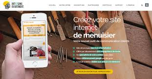
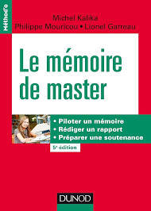

Mes réalisations
Voici quelques exemples de ce que j’ai livré récemment. (Pour respecter la vie privée de mes clients, certains noms ont été modifiés ou des captures d’écran sont floutées.)
Site vitrine – SARL Menuiserie Martin
📍 Besoin : présenter leurs réalisations, horaires, coordonnées.
🎯 Résultat : site en 3 pages, formulaire de devis, mobile-friendly.
⏱ Livré en 3 jours.

CV en ligne – Julie, assistante commerciale
📍 Besoin:candidature spontanée dans une startup.
🎯 Résultat:page CV moderne avec lien LinkedIn, téléchargement PDF, photo pro.
⏱ Livré en 24h.

Mise en page Word – Mémoire de Master Management & Innovation
📍 Besoin:65 pages à normaliser (saut de page, sommaire, références).
🎯 Résultat:document conforme aux normes universitaires, sommaire cliquable.
⏱ Livré en 2h.
